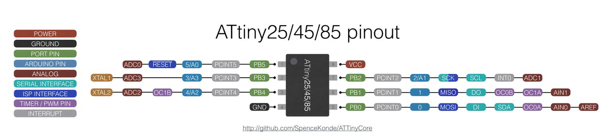
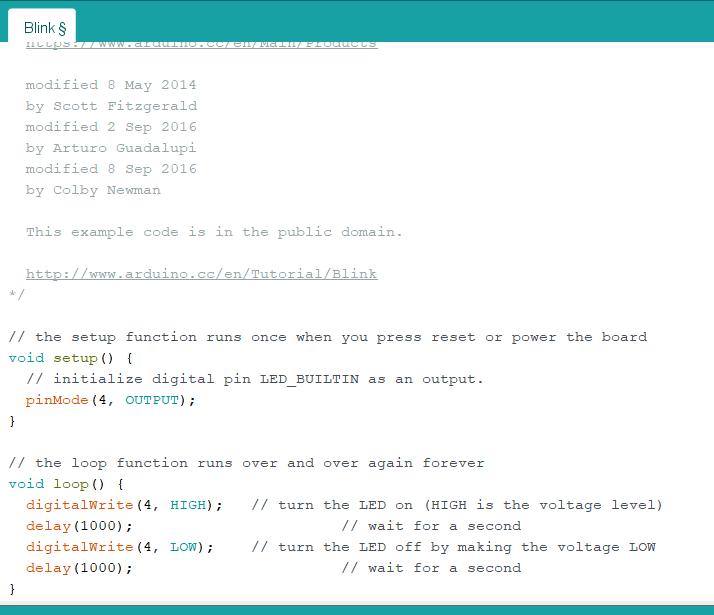
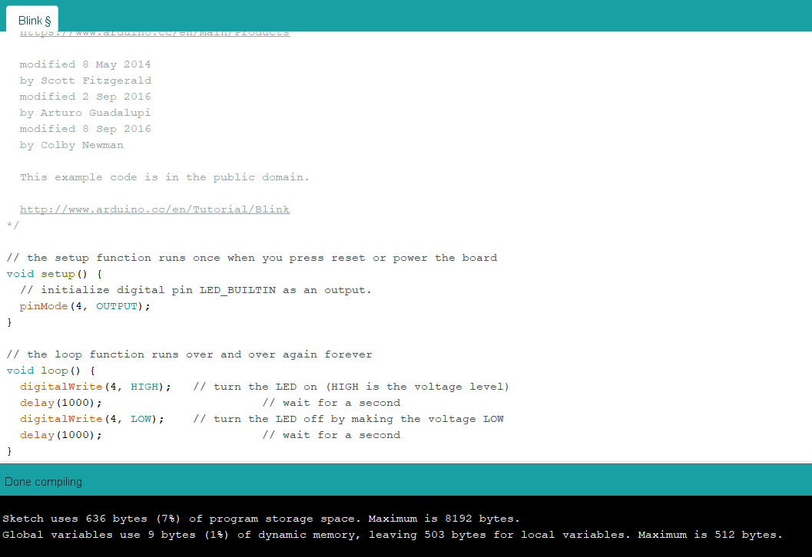
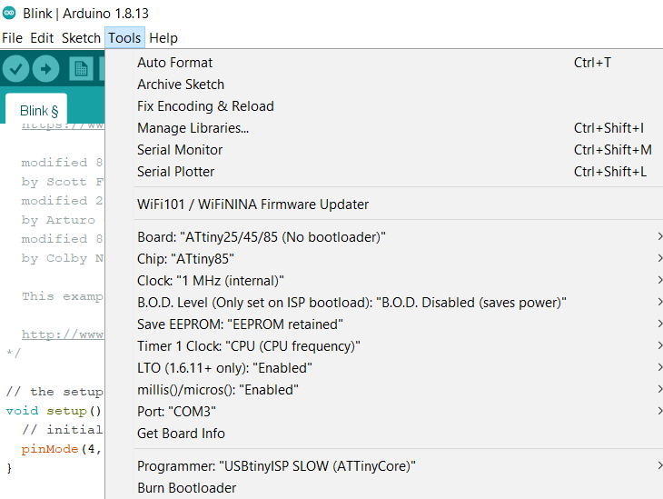
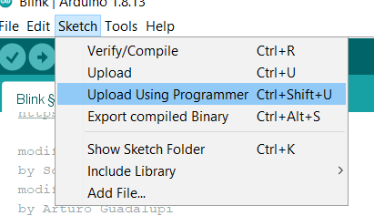

Programming the boi
Now we have our own hello board, we can use it and the ISP as the programmer.
The software we are going to be using will be arduino, it has support for it and it will be easier to use arduino instead of ome other software.
First we need to go to a link, this link will give all the steps needed on installing the support for attiny boards.Spencer Konde attinycore
After installation, we should be in arduino IDE, you can start to do a simple code, we can start with a blink command, just to understand how to program it.
First we just open up the blink example circuit.
Then we change the LEDBUILDIN to the pin number on our hello board, on our board, the pin where the LED is connected is number 4. If you have other pins, you can refer to this pinout diagram to know which number to put in.
After changing the pin number, the command should look like this:
Then we can verify the code for any errors.
Now we pay attention to the board we are going to upload to, below is the settings for the board we are going to connect.
Finally we are going to send the program over, since the ISP is not recognised by arduino as a board, we are going to need to send the program through another way. Go to "sketch" then under sketch, click on "upload using programmer" this will send the program to the ISP and then the hello board.
After pressing it, it will show the progress bar of uploading the code and the green LED for the ISP will start to flash, after it stopped flashing, it means the code is uploaded.
If all is done correctly, the hello board LED should start blinking.
Congrats! you learnt how to program your hello board.